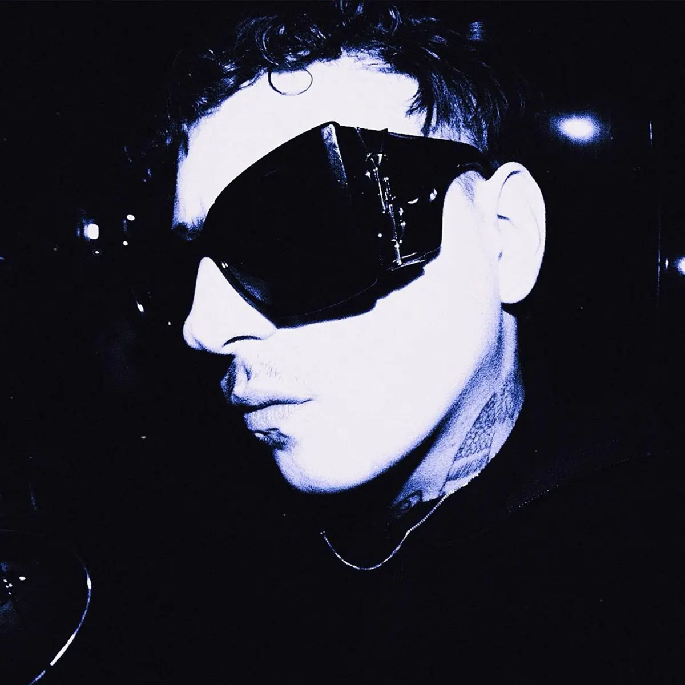

Publié le 8 novembre 2026

Zed Yun Pavarotti a sorti son album Unmiracle le 6 novembre 2026 selon son site officiel. L'artiste stéphanois écarte le rap traditionnel pour un rock guitare et de la chanson mélancolique.
Le public connaissait ses mélodies sombres et son phrasé traînant. Avec ce troisième long-format, le chanteur affirme une direction stylistique nette en assumant des riffs bruts et des refrains pop.
Certains regretteront l'époque où les drums de trap soutenaient ses doutes. Mais son écriture conserve cette urgence poétique propre aux trajectoires intègres, à l'image du parcours de Django et son projet Lazar dans la scène indépendante.
Comment Zed Yun Pavarotti fait-il évoluer sa musique sur Unmiracle ?
Zed Yun Pavarotti privilégie l'instrumentation organique et les guitares saturées sur ce projet. Des morceaux comme "Si Dieu fume" adoptent un tempo rock agressif, tandis que "Paroxétine" rappelle la tension de ses débuts. Les prods délaissent les sonorités synthétiques au profit d'arrangements enregistrés avec des musiciens.
Cette mutation vers le rock n'efface pas son écriture introspective. Le chanteur aborde l'absurde, la fatigue et l'amour sans filtre moral. Son interprétation vocale oscille entre chant écorché et diction parlée, ce qui donne une texture brute à l'ensemble des pistes.
Le choix d'inclure vingt titres crée toutefois quelques longueurs en milieu de disque. La formule guitare-voix répète parfois des schémas harmoniques proches. Malgré ces répétitions, l'album garde une identité claire du début à la fin.
Pourquoi le duo avec Marguerite Thiam marque-t-il le disque ?
Le morceau "Quand est-ce qu'on oublie qu'on aime" réunit Zed Yun Pavarotti et Marguerite Thiam. Diffusé comme extrait avant la sortie du projet, ce titre devient le passage le plus accessible de l'album. Le contraste entre la voix grave de l'artiste et le timbre doux de son invitée crée un équilibre naturel.
Cette collaboration apporte une respiration pop au milieu d'un disque sombre. La mélodie s'appuie sur une ligne de basse simple et des guitares aériennes. Les deux interprètes y évoquent la difficulté de tourner la page après une rupture, sans céder au misérabilisme.
C'est le seul duo présent sur la tracklist de vingt morceaux. Ce choix isole cette piste et lui donne une place centrale dans la narration du projet. Il prouve l'ouverture du chanteur vers d'autres horizons artistiques.
Quels sont les thèmes principaux abordés dans l'album ?
Zed Yun Pavarotti aborde le doute existentialiste et la quête de sens à travers vingt chansons. Les textes évoquent la fuite du temps, l'addiction et les relations amoureuses compliquées. L'artiste utilise des images simples pour traduire des sensations d'isolement ou de révolte calme.
L'humour noir et l'auto-dérision traversent aussi plusieurs morceaux du projet. Sur "Sorry" ou "Sous ma veste", l'écriture nuance la noirceur générale par un détachement assumé. Cette dualité évite au disque de tomber dans un pathos excessif.
Au terme de l'écoute, le projet propose une vision personnelle du spleen contemporain. L'artiste y affirme sa singularité sans chercher à plaire aux standards des radios commerciales.
| Album | Année | Format | Direction sonore |
|---|---|---|---|
| Beauseigne | 2020 | Album studio | Trap introspective, mélodies sombres |
| Encore | 2023 | Album studio | Pop alternative, chanson rock |
| Unmiracle | 2026 | Album studio | Rock alternatif, pop guitare |